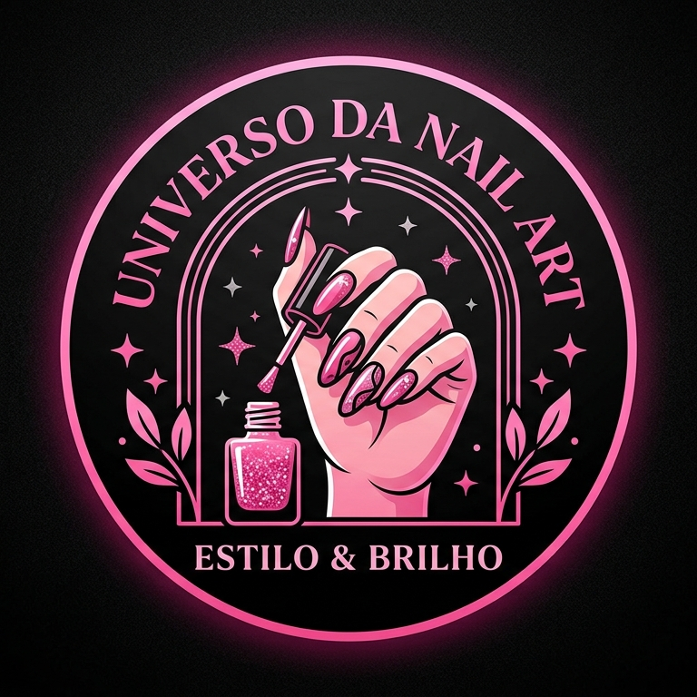

Bem-Vindos ao Universo da Nail Art! 💅✨
Por: Maria Eduarda Godoy
Fala, galera! Sejam muito bem-vindos ao meu espaço! Todos me chamam de Duda, e criei o Universo da Nail Art — com essa vibe estilosa em rosa e preto — para ser o nosso ponto de encontro oficial para falar sobre unhas de um jeito leve, sincero e sem enrolação. Por aqui, vou soltar as melhores indicações, comentar os lançamentos de esmaltes da temporada e falar a real sobre o que vale ou não a pena testar!